| Model | HQ | Pixelation | Motion Blur | Turbulence | Average Robustness |
Average WAR |
||||||
|---|---|---|---|---|---|---|---|---|---|---|---|---|
| AP | RR | WAR | AP | RR | WAR | AP | RR | WAR | ||||
| GLEE-Plus-pretrain-Stage 1 | 44.00 | 36.17 | 0.82 | 0.82 | 36.89 | 0.84 | 0.84 | 28.28 | 0.64 | 0.64 | 0.77 | 0.77 |
| GLEE-Pro-pretrain-Stage 1 | 50.83 | 44.73 | 0.88 | 0.88 | 39.89 | 0.78 | 0.78 | 27.30 | 0.54 | 0.54 | 0.73 | 0.73 |
| GLEE-Pro-joint-Stage 2 | 61.96 | 52.82 | 0.85 | 0.85 | 46.34 | 0.75 | 0.75 | 32.50 | 0.52 | 0.52 | 0.71 | 0.71 |
| GLEE-Pro-scaleup-Stage 3 | 61.71 | 51.80 | 0.84 | 0.84 | 45.28 | 0.73 | 0.73 | 31.50 | 0.51 | 0.51 | 0.69 | 0.69 |
| MM-GDINO-L | 53.00 | 37.60 | 0.71 | 0.71 | 38.45 | 0.73 | 0.73 | 28.45 | 0.54 | 0.54 | 0.66 | 0.66 |
| GLEE-Plus-joint-Stage 2 | 60.44 | 41.88 | 0.69 | 0.69 | 44.10 | 0.73 | 0.73 | 32.89 | 0.54 | 0.54 | 0.66 | 0.66 |
| GLEE-Plus-scaleup-Stage 3 | 60.34 | 42.20 | 0.70 | 0.70 | 42.84 | 0.71 | 0.71 | 31.73 | 0.53 | 0.53 | 0.65 | 0.65 |
| FIBER-B*-RefCOCOg | 22.70 | 15.60 | 0.69 | 0.66 | 17.22 | 0.76 | 0.72 | 13.06 | 0.58 | 0.55 | 0.67 | 0.64 |
| MM-GDINO-L* - ALL | 60.30 | 41.70 | 0.69 | 0.69 | 42.75 | 0.71 | 0.71 | 31.80 | 0.53 | 0.53 | 0.64 | 0.64 |
| MM-GDINO-B (O_G_V) | 52.50 | 35.70 | 0.68 | 0.68 | 38.15 | 0.73 | 0.73 | 27.25 | 0.52 | 0.52 | 0.64 | 0.64 |
| GLIP-L [7] | 51.23 | 34.20 | 0.67 | 0.67 | 36.06 | 0.70 | 0.70 | 26.36 | 0.51 | 0.51 | 0.63 | 0.63 |
| MM-GDINO-B* - ALL | 59.50 | 40.10 | 0.67 | 0.67 | 42.05 | 0.71 | 0.71 | 29.90 | 0.50 | 0.50 | 0.63 | 0.63 |
| FIBER-B*-LEVIS-FT | 50.70 | 31.70 | 0.63 | 0.63 | 35.60 | 0.70 | 0.70 | 25.19 | 0.50 | 0.50 | 0.61 | 0.61 |
| FIBER-B*-COCO-FT | 58.40 | 36.60 | 0.63 | 0.63 | 39.66 | 0.68 | 0.68 | 28.40 | 0.49 | 0.49 | 0.60 | 0.60 |
| FIBER-B | 49.47 | 30.80 | 0.62 | 0.62 | 33.53 | 0.68 | 0.68 | 23.09 | 0.47 | 0.47 | 0.59 | 0.59 |
| RCx4 Fully80-COCO-FT | 88.77 | 56.86 | 0.64 | 0.64 | 62.05 | 0.70 | 0.70 | 36.98 | 0.42 | 0.42 | 0.59 | 0.59 |
| RCx4-COCO-FT | 80.00 | 49.80 | 0.62 | 0.62 | 53.91 | 0.67 | 0.67 | 34.33 | 0.43 | 0.43 | 0.58 | 0.58 |
| FIBER-B*-RefCOCO+ | 18.00 | 12.30 | 0.68 | 0.59 | 13.38 | 0.74 | 0.64 | 9.74 | 0.54 | 0.46 | 0.66 | 0.56 |
| MM-GDINO-T (O_G_GR) | 50.50 | 30.60 | 0.61 | 0.61 | 33.00 | 0.65 | 0.65 | 19.20 | 0.38 | 0.38 | 0.55 | 0.55 |
| MM-GDINO-T (O_G_GR_V) | 50.40 | 30.10 | 0.60 | 0.60 | 33.13 | 0.66 | 0.66 | 19.20 | 0.38 | 0.38 | 0.55 | 0.55 |
| FIBER-B*-RefCOCO | 15.50 | 10.90 | 0.70 | 0.54 | 12.37 | 0.80 | 0.61 | 9.86 | 0.64 | 0.49 | 0.71 | 0.54 |
| RCx4-LVIS-FT | 82.70 | 47.80 | 0.58 | 0.58 | 53.39 | 0.64 | 0.64 | 33.49 | 0.40 | 0.40 | 0.54 | 0.54 |
| GDINO-T Swin-T (O_G_CAP4) | 48.50 | 29.30 | 0.60 | 0.60 | 30.90 | 0.64 | 0.64 | 18.00 | 0.37 | 0.37 | 0.54 | 0.54 |
| RCx4 Fully123-LVIS-FT | 82.38 | 47.55 | 0.58 | 0.58 | 53.43 | 0.64 | 0.64 | 32.20 | 0.39 | 0.39 | 0.54 | 0.54 |
| MM-GDINO-T (O_G) | 50.40 | 29.20 | 0.58 | 0.58 | 32.70 | 0.65 | 0.65 | 18.90 | 0.38 | 0.37 | 0.53 | 0.53 |
| MM-GDINO-T (O_G_V) | 50.60 | 29.30 | 0.58 | 0.58 | 32.55 | 0.64 | 0.64 | 19.00 | 0.38 | 0.38 | 0.53 | 0.53 |
| GLIP-T [5] | 46.60 | 26.20 | 0.56 | 0.56 | 29.55 | 0.63 | 0.63 | 18.05 | 0.39 | 0.39 | 0.53 | 0.53 |
| GLIP-T (C) | 46.70 | 25.70 | 0.55 | 0.55 | 29.92 | 0.64 | 0.64 | 18.14 | 0.39 | 0.39 | 0.53 | 0.53 |
| RC-COCO-FT | 75.30 | 41.60 | 0.55 | 0.55 | 46.47 | 0.62 | 0.62 | 27.84 | 0.37 | 0.37 | 0.51 | 0.51 |
| GLIP-T (B) | 44.90 | 22.30 | 0.50 | 0.50 | 27.57 | 0.61 | 0.61 | 15.81 | 0.35 | 0.35 | 0.49 | 0.49 |
| RC-LVIS-FT | 80.00 | 43.00 | 0.54 | 0.54 | 47.58 | 0.59 | 0.59 | 25.90 | 0.32 | 0.32 | 0.49 | 0.49 |
| GLEE-Lite-pretrain-Stage 1 | 42.59 | 23.00 | 0.54 | 0.54 | 26.39 | 0.62 | 0.62 | 12.33 | 0.29 | 0.29 | 0.48 | 0.48 |
| GLEE-Lite-joint-Stage 2 | 54.96 | 28.39 | 0.52 | 0.52 | 32.48 | 0.59 | 0.59 | 14.72 | 0.27 | 0.27 | 0.46 | 0.46 |
| GLIP-T (A) | 42.90 | 20.20 | 0.47 | 0.47 | 25.40 | 0.59 | 0.59 | 12.79 | 0.30 | 0.30 | 0.45 | 0.45 |
| RegionCLIP R50x4 (RCx4) | 62.40 | 28.90 | 0.46 | 0.46 | 39.67 | 0.62 | 0.62 | 17.32 | 0.27 | 0.27 | 0.45 | 0.45 |
| GLEE-Lite-scaleup-Stage 3 | 53.70 | 26.90 | 0.50 | 0.50 | 31.20 | 0.58 | 0.58 | 14.40 | 0.27 | 0.27 | 0.45 | 0.45 |
| YOLO-Worldv2-XL-640 | 47.50 | 12.60 | 0.27 | 0.27 | 29.90 | 0.63 | 0.63 | 14.30 | 0.30 | 0.30 | 0.40 | 0.40 |
| YOLO-Worldv2-L (CLIP-L)🔥 -640 | 46.00 | 11.70 | 0.25 | 0.25 | 28.20 | 0.61 | 0.61 | 12.90 | 0.28 | 0.28 | 0.38 | 0.38 |
| YOLO-Worldv2-X-640 | 46.70 | 9.60 | 0.21 | 0.21 | 29.50 | 0.63 | 0.63 | 14.50 | 0.31 | 0.31 | 0.38 | 0.38 |
| YOLO-Worldv2-L-640 | 45.40 | 10.10 | 0.22 | 0.22 | 27.40 | 0.60 | 0.60 | 14.50 | 0.32 | 0.32 | 0.38 | 0.38 |
| YOLO-Worldv2-L-640-LITE | 45.10 | 8.50 | 0.19 | 0.19 | 28.20 | 0.63 | 0.63 | 12.50 | 0.28 | 0.28 | 0.36 | 0.36 |
| YOLO-Worldv2-M-640 | 42.80 | 9.20 | 0.21 | 0.21 | 24.40 | 0.57 | 0.57 | 11.30 | 0.26 | 0.26 | 0.35 | 0.35 |
| RegionCLIP R50 (RC) | 58.18 | 20.10 | 0.35 | 0.35 | 28.82 | 0.48 | 0.48 | 8.22 | 0.14 | 0.14 | 0.32 | 0.32 |
| YOLO-Worldv2-S-640 | 37.50 | 5.30 | 0.14 | 0.14 | 20.30 | 0.54 | 0.54 | 6.80 | 0.18 | 0.18 | 0.29 | 0.29 |
Setup 🔨
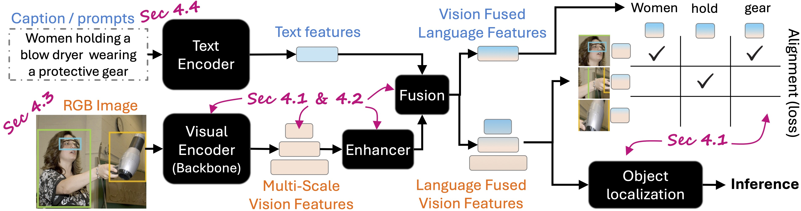
Analysis of VLM architecture towards robustness: The detailed analysis of VLM architecture layer by layer (peeling layers) to understand the impact of real-world noise on object detection performance. In section 4.1 & 4.2, we analyze the vision features collapsed at different layers, size/architecture of vision backbone, and the effect of fusion. In section 4.3, we analyse the impact of evaluation datasets on robustness, and evaluate what attribute of image/annotation contribute to robustness. Further, the impact of language modality on robustness is evaluated in section 4.4. Image modified from GLIP.

No Collapse
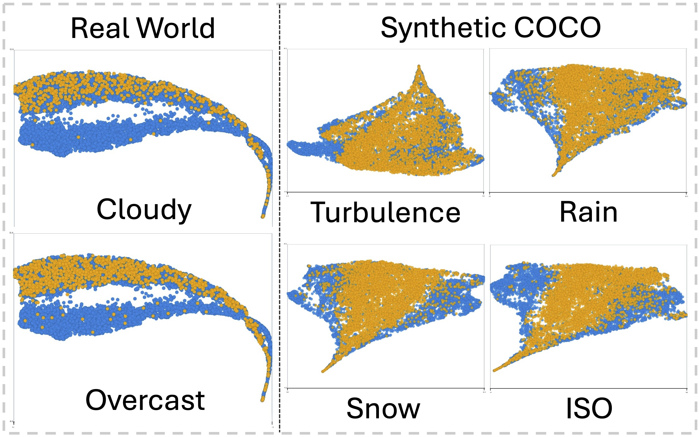
Complete Collapse
Synthetic COCO & Real-World BDDK100 feature collapse: Synthetic noisy features collapse (orange) is compared against clean image features (blue). (Left) Shows minimal feature collapse of synthetic noisy features from HQ image features, such synthetic noises include motion blur, fog etc. (Right) Shows complete feature collapse of synthetic noisy features from HQ image features, these synthetic noises include turbulence, rain, iso etc. As we increase the severity of the synthetic noise, the feature collapse increases from minimal to complete.
Sec. 4.1 Overall Models 🥸
🔬 Click on the figures to enlarge
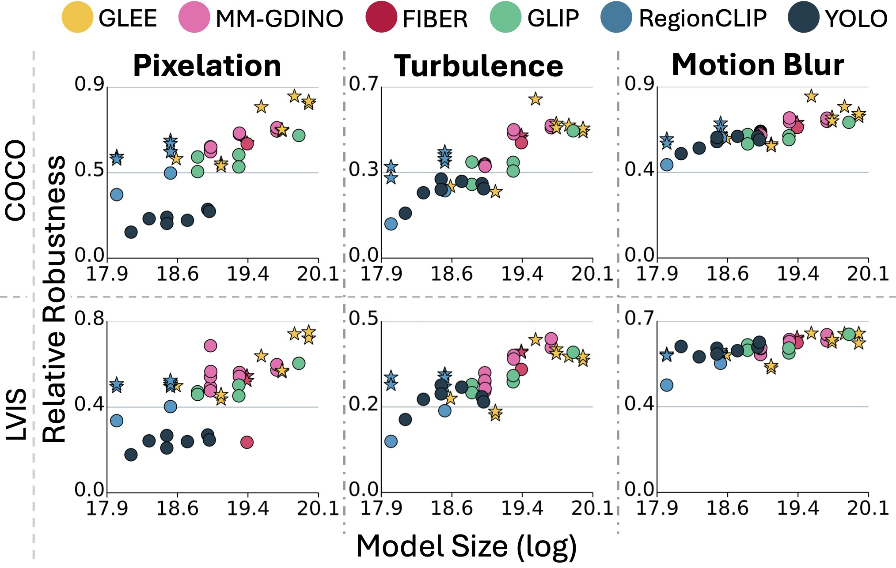
(a) Size and Robustness correlation Strong +ve correlation between robustness & overall detector size. Fine-tuned models shown as ★.
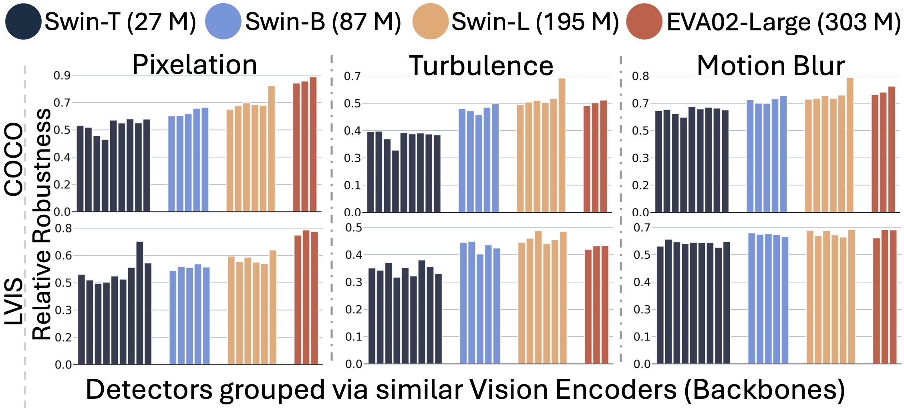
(b) Similar Robustness for similar backbones Depth is the deciding factor with overall size playing minimal role.
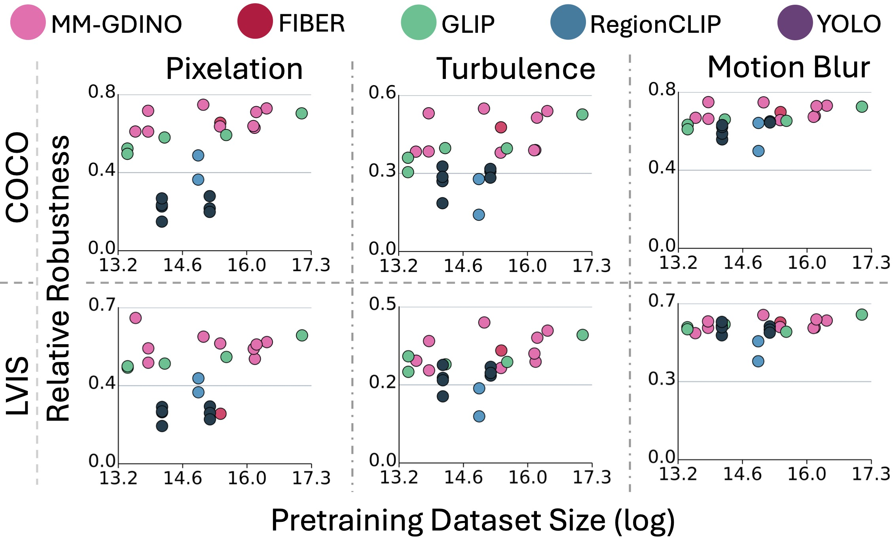
(c) Robustness weak correlation with pretraining Robustness remains consistent regardless of pretraining dataset size.
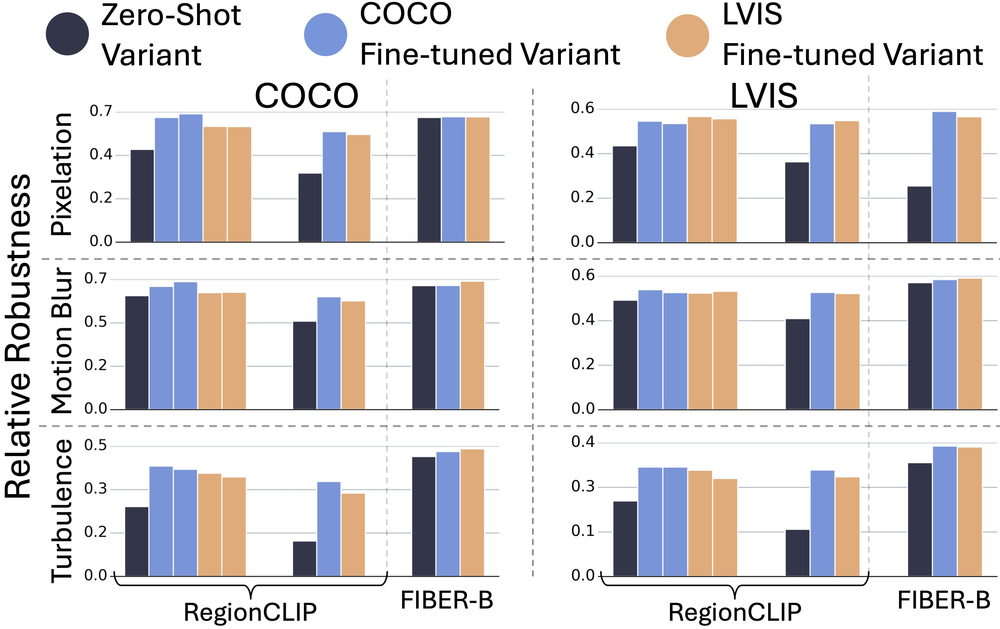
(d) No clear correlation of Finetuning with Robusntess Region CLIP improves, FIBER-B suffers.
Takeaway
- Model size positively correlates with robustness (a), with backbone being the deciding factor.
- Similar backbones has similar robustness (b), other bells and whistes like different architectural design, neck, vision-text fusion network, different losses and pretraining strategies / data hardly playing any major role. General overall trend is ResNet < Swin-T (12 blocks, 27M) < Swin-B (12 blocks, 87M) ≤ Swin-L (24 blocks 195M) ≃ EVA-02 (24 blocks 303M).
- Robustness is not simply learned from more data (c). Models trained on very different amounts of data can have similar robustness. Hence robsutness technique should emphasize on noise-robust training, without relying on pretraining and fine-tuning.
- Finetuning shows no clear correlation with robustness while it helps RegionCLIP, it hurts FIBER-B.
- Swin-B (87 M) can be an amazing alternative to EVA-02 (303 M) because of their similar robustness.
- COCO and LVIS (same images, different annotations) imparts similar robustness, i.e. domain of images is more important than annotation.
Sec. 4.2 Insight into Model Depth & Architecture 🤯
🔬 Click on the figures to enlarge
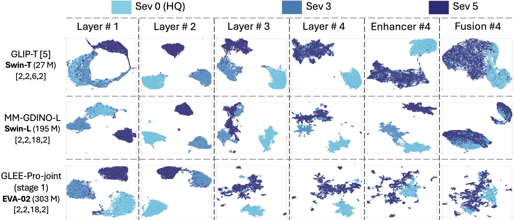
Pixelation
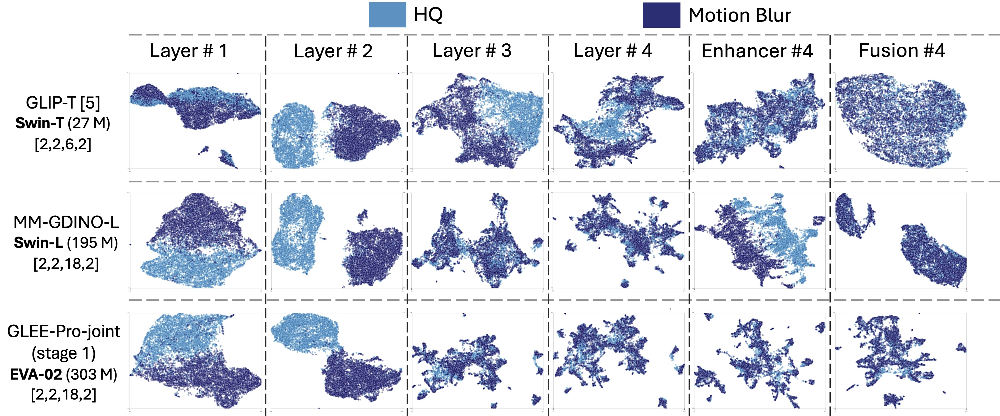
Motion Blur
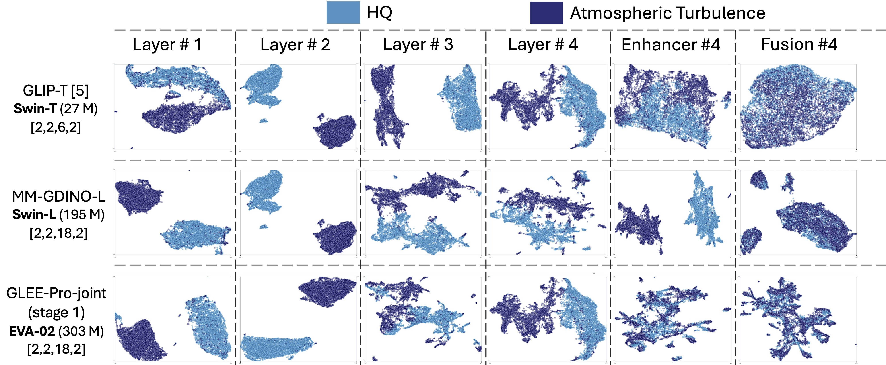
Turbulence
Layerwise Robustness Analysis: Per Layer Feature Collapse for Swin-T (GLIP, 12 blocks), Swin-L (MM-GDINO-L, 24 blocks) and EVA-02 (GLEE-Pro-joint, 24 blocks) are anaylsed across 3 different types of perturbations. Here robustness is measured by the overlap between features of sev 5 (dark patches) and sev 0 (lighter patches), this occurs at the Fusion layer. Also, all models shows similar trend of feature collapse as the depth increases.
Takeaway
- Early layers are more vulnerable to noise, as indicated by distinct cluster or lumps of features at shallow layers.
- Same depth (2 and 4 blocks), i.e. layer #1 and layer #2, have similar feature collapse (lumps) across all models, despite architectural differences.
- Model depth, not necessarily size, determines feature collapse, indicated by MM-GDINO-L (24 blocks) layer #3 (22nd block) and layer #4 (24th block) collapse are similar to GLEE-Pro-joint (24 blocks). While MM-GDINO-L is considerably different from Swin-T (12 blocks) at layer #3 (10th block) and layer #4 (12th block).
- Feature enhancer serves no utility in robustness.
- Fusion layer cross exchange information between spatial tokens of all layers 192 × 192, 96 × 96, 48 × 48, 24 × 24, inducing robustness in the last layer (24 × 24), as evidenced by the significant overlap between features of sev 5 and sev 0 for all models.
Sec. 4.3 Robustness because of input image? 😨
🔬 Click on the figures to enlarge
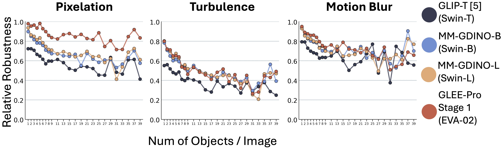
(a) No of objects: Models are very robust when the # of objects in an image is < 3, with unpredictable jumps after 25+ objects, likely due to very few samples in that range.
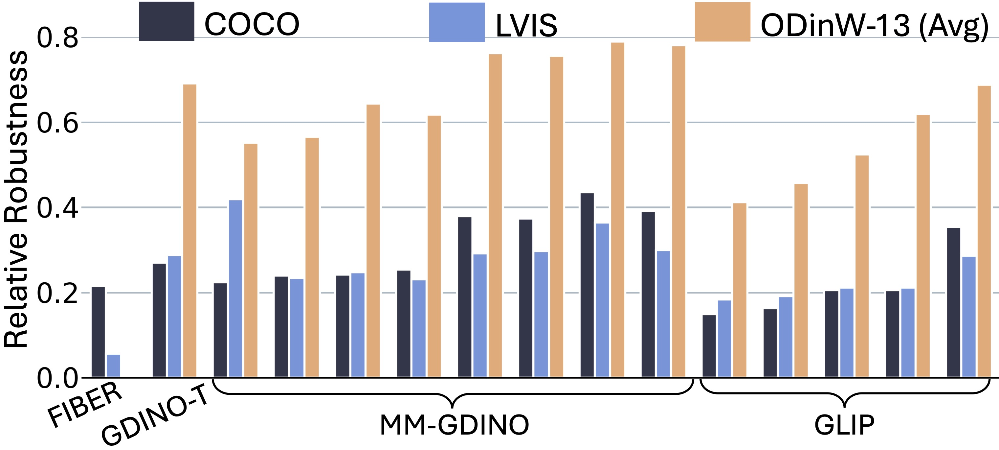
(b) Dataset Dependent Robustness The COCO and LVIS similar robustness because of similar image domain, whereas ODinW-13 is more robustness (majorly large singular objects) than COCO & LVIS on pixelation.
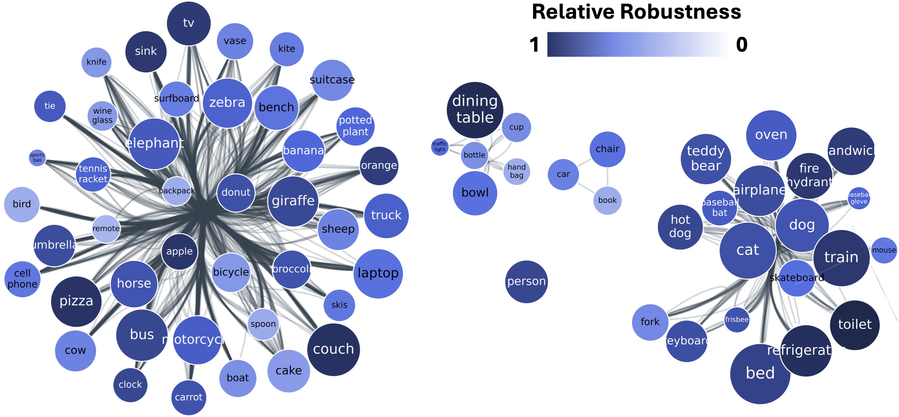
(c) Classwise robustness: Some COCO classes are more robust (shade of blue) than others, with moderate correlation with average object size (dot size). Classes grouped in bins of frequency for GLIP-T.
Takeaway
- Larger objects (≥ 96 × 96 size) are significantly more robust to noise.
- All detectors are highly robust when there are only a few objects to be detected (≤ 3) (a). As the number of objects/images goes above 3, robustness starts to see a drop.
- Datasets like ODinW-13, majorly dominated by singular and large objects is singificantly more robust than LVIS & COCO, which have higher proportion of smaller and more number of objects on an average.
- COCO and LVIS exhibit nearly identical robustness despite vastly different label spaces, because they share the same underlying images (b)
- Class-wise robustness correlates moderately with average object size, but shows almost no correlation with class frequency (c). This inturn partially explains how LVIS (long tail distribution) has similar robustness to COCO.
Sec. 4.4 Role of Language 🤔
🔬 Click on the figures to enlarge
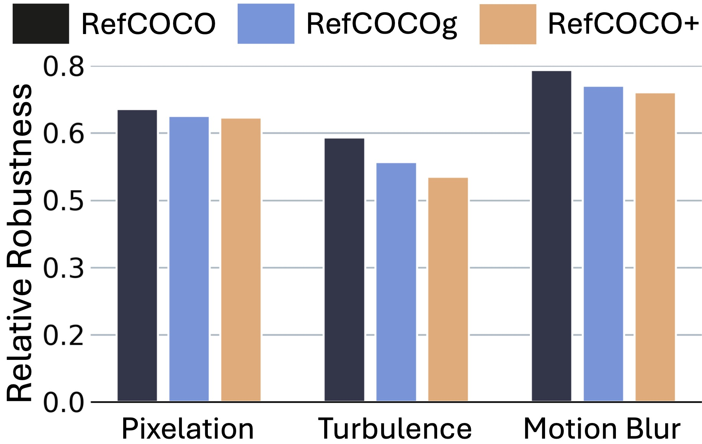
(a) Training Captions descriptiveness limited impact on Robustness Despite training on captions with different degrees of expressiveness (RefCOCOg is most descriptive), robustness varies slightly (FIBER-B).
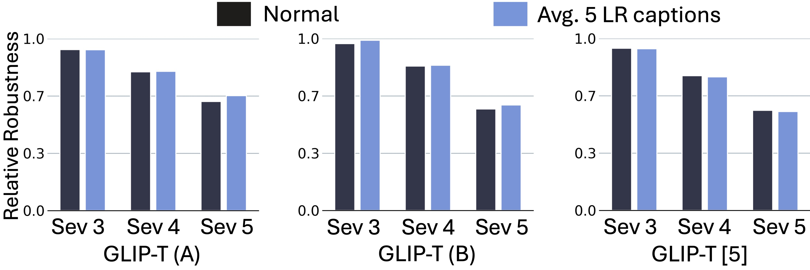
(b) Evaluation with Pixelation aware Captions : Evaluation on Flickr30k w/ test captions modified with textual context of pixelation (using LLM, 'LR captions') has minimal impact on robustness of GLIP variants.
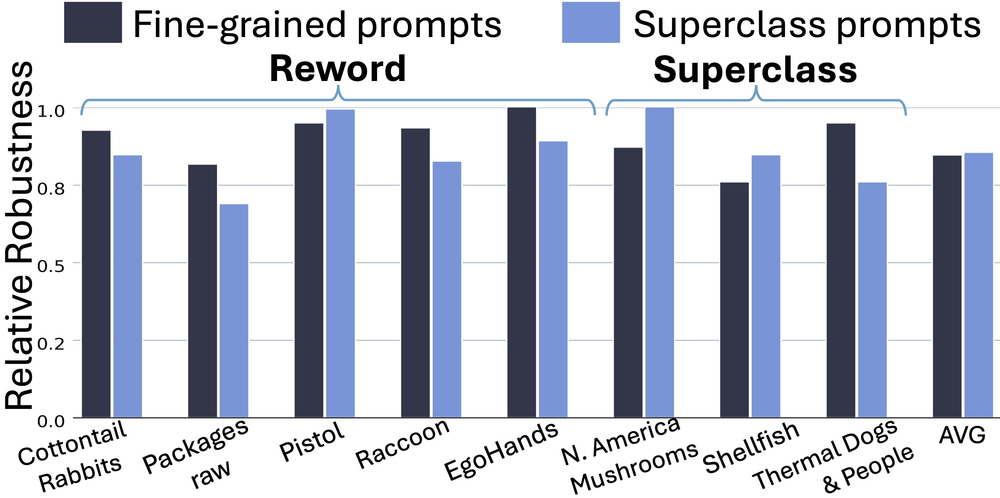
(c) Robustness for Finegrained vs Superclass Captions Similar robustness for ODinW13 finegrained vs superclass captions for pixelation (GLIP-T). Language is not the primary driver for robustness.
Takeaway
- Caption expressiveness during training has minimal impact on robustness, as models fine-tuned on simple (RefCOCO), appearance-based (RefCOCO+), or highly descriptive captions (RefCOCOg) show nearly identical robustness under noise. Indicating that robustness depends fundamentally on visual features, not semantic (a).
- Injecting perturbation context into test prompts (captions) does not meaningfully impact robustness, showing that language cannot compensate for corrupted visual representations bacause of noise (b).
- Rewording class labels or grouping classes into supercategories does not impact robustness as such (c).
- Efforts to improve OV-OD robustness should prioritize the vision backbone and feature learning, rather than relying on caption richness, prompt tuning, or linguistic augmentation
Emperical verification of Analysis
LRTKO+ & LRTKO++
- LRTKO+: We extend LR-TK0 (Pathak et al., 2025), originally designed for low-resolution image classification, to hierarchical vision transformers (e.g., Swin) for object detection. At every layer (especially shallow), we insert 32 × 32 trainable spatial tokens interpolated to match the layer’s spatial resolution. This allows Flexible hierarchy (object detectors have a variable spatial resolution) and lower parameter overhead (+5.7%) compared to matching the entire spatial resolution (+22.5%).
- LRTKO++: On top of LR-TK0+, we introduce a lightweight continual learning strategy to simulate real-world degradations to improve robustness. Unlike distillation (which requires two passes for teacher & student), continual learning has no additional cost (single forward pass)
Curriculum-Based Pixelation Strategy:
-
Stage 1 (Epochs 1 to T1, T1 = 10):
Training starts with clean images. Pixelation is gradually introduced inside ground-truth bounding boxes with linearly increasing probability. This helps the model learn robust foreground object representations against clean backgrounds. -
Stage 2 (After T1):
Pixelation is progressively applied to regions outside ground-truth boxes, while continuing to pixelate foreground objects. This simulates realistic degradation in both foreground and background regions.
Validation 😌
| Distortion on LR-TK0+ |
COCO | ODinW-13 | ||
|---|---|---|---|---|
| mAP | RR | avg AP | RR | |
| Uniform | 27.81 | 0.60 | 37.78 | 0.90 |
| Background | 27.72 | 0.59 | 36.84 | 0.88 |
| Random | 27.35 | 0.59 | 36.64 | 0.87 |
| GT boxes (LR-TK0++) | 28.37 | 0.61 | 38.21 | 0.91 |
| Model GLIP-T [5] |
# Params |
COCO (Pixelation) | Wider face | |||
|---|---|---|---|---|---|---|
| Sev 1 | Sev 2 | Sev 3 | AP | AR50 | ||
| Zero-shot | 27.5 M | 46.0 | 42.0 | 26.2 | 12.57 | 26.00 |
| LR-TK0+ | 29.1 M | 44.5 | 41.4 | 28.2 | 13.32 | 29.88 |
| LR-TK0++ | 29.1 M | 45.5 | 41.7 | 28.4 | 13.99 | 29.88 |
Validation 😌
| Model | BDD-100K (Training) | DAWN | Fog City | Virtual KITTI 2 | COCO | ||||||||||||
|---|---|---|---|---|---|---|---|---|---|---|---|---|---|---|---|---|---|
| PC | S | R | F | O | All | F | R | S | Sa | All | F | O | R | All | |||
| Zero-shot | 43.4 | 43.7 | 41.7 | 46.6 | 47.4 | 31.4 | 32.6 | 40.5 | 38.5 | 49.8 | 33.8 | 21.4 | 15.6 | 11.2 | 11.5 | 20.9 | 46.6 |
| E2E | 71.3 | 72.7 | 71.0 | 69.5 | 77.4 | 66.4 | 31.6 | 36.4 | 38.5 | 45.2 | 36.0 | 26.9 | 16.7 | 12.0 | 12.6 | 31.6 | 3.0 |
| 27.9 | 29.0 | 29.3 | 22.9 | 30.0 | 35.0 | -1.0 | -4.1 | 0.0 | -4.6 | 2.2 | 5.5 | 1.1 | 0.8 | 1.1 | 10.7 | -43.6 | |
| Fuse | 69.4 | 72.1 | 70.3 | 67.7 | 76.6 | 65.1 | 30.0 | 35.9 | 36.3 | 42.5 | 35.6 | 26.6 | 17.2 | 12.3 | 12.7 | 29.8 | 3.8 |
| 26.0 | 28.4 | 28.6 | 21.1 | 29.2 | 33.7 | -2.6 | -4.6 | -2.2 | -7.3 | 1.8 | 5.2 | 1.6 | 1.1 | 1.2 | 8.9 | -42.8 | |
| TK0 | 61.5 | 63.0 | 61.0 | 59.2 | 68.4 | 45.1 | 35.3 | 42.3 | 40.6 | 50.1 | 32.5 | 25.5 | 16.9 | 12.2 | 12.6 | 26.1 | 43.2 |
| 18.1 | 19.3 | 19.3 | 12.6 | 21.0 | 13.7 | 2.7 | 1.8 | 2.1 | 0.3 | -1.3 | 4.1 | 1.3 | 1.0 | 1.1 | 5.2 | -3.4 | |
| NN | 61.8 | 64.0 | 61.6 | 63.0 | 68.5 | 45.0 | 33.3 | 41.6 | 38.3 | 49.7 | 33.4 | 25.8 | 16.9 | 12.0 | 12.4 | 28.7 | 22.1 |
| 18.4 | 20.3 | 19.9 | 16.4 | 21.1 | 13.6 | 0.7 | 1.1 | -0.2 | -0.1 | -0.4 | 4.4 | 1.3 | 0.8 | 0.9 | 7.8 | -24.5 | |
| NN & TK0 | 66.8 | 68.6 | 66.1 | 65.5 | 73.1 | 55.2 | 34.0 | 41.3 | 39.8 | 49.5 | 36.1 | 28.2 | 17.3 | 12.4 | 13.1 | 29.9 | 33.4 |
| 23.4 | 24.9 | 24.4 | 18.9 | 25.7 | 23.8 | 1.4 | 0.8 | 1.3 | -0.3 | 2.3 | 6.8 | 1.7 | 1.2 | 1.6 | 9.0 | -13.2 | |
BibTeX 🙏
@misc{robust_onion,
title ={Robust Onion: Peeling Open Vocab Object Detectors Under Noise},
author ={Priyank Pathak and Mukilan Karuppasamy and Aaditya Baranwal and Shruti Vyas, and Yogesh S Rawat},
booktitle ={The 19th European Conference on Computer Vision (ECCV)},
year ={2026},
month ={September},
url ={},
}